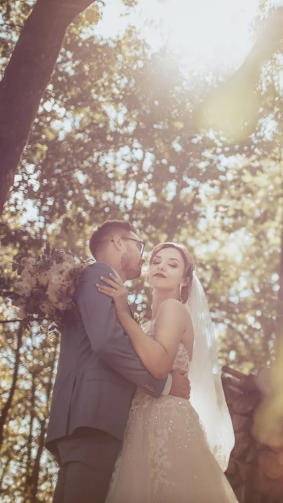
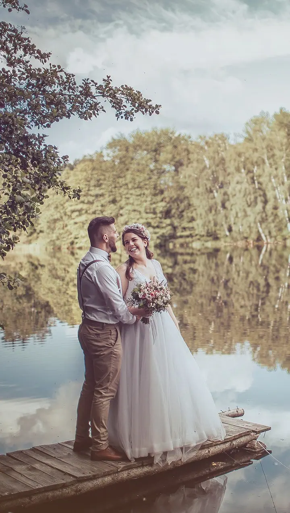
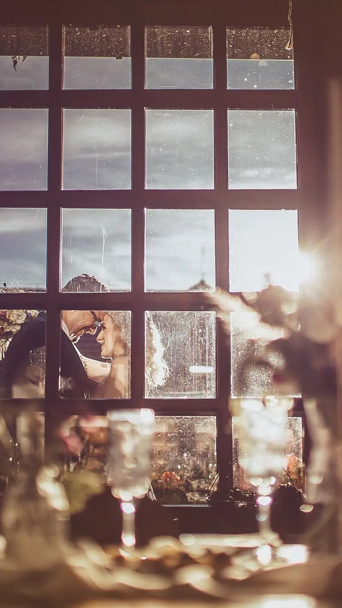
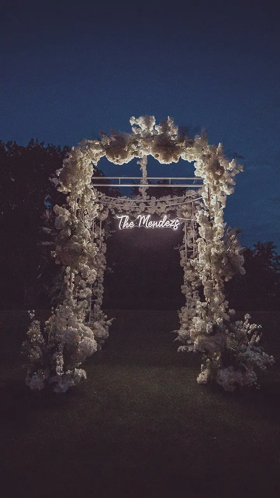

jedna
Svatby
Svatby fotím od roku 2005 a mám za sebou přes 400 svatebních dnů. Fotím celý den od obřadu přes portréty ve dvou až po večerní tanec s přáteli.


Jmenuji se Milan Havlík a svatby fotím od roku 2005. Za tu dobu jsem byl u více než 400 svateb, od obřadu na zahradě až po večerní parket plný hostů. Kromě svateb fotím také maturitní plesy.
Více o mně
Co fotím
jedna
Svatby fotím od roku 2005 a mám za sebou přes 400 svatebních dnů. Fotím celý den od obřadu přes portréty ve dvou až po večerní tanec s přáteli.
Kromě svateb fotím i maturitní plesy. Mají vlastní plesový Instagram, kde najdete ukázky.
Přes 400 svateb a každá trochu jiná

Za objektivem
Jmenuji se Milan Havlík a fotím svatby už od roku 2005. Za tu dobu se jich nasbíralo přes 400 a pořád mě baví, že žádná není stejná jako ta předchozí.
Rád pracuji se světlem, s protisvětlem v korunách stromů, s odlesky na hladině nebo s pohledem přes okno. Fotky pak ladím do teplých tónů, aby po letech působily stejně příjemně jako ten den.
Kromě svateb fotím i maturitní plesy. Pokud vás moje práce oslovila, napište mi na milan@mhavli.cz nebo zavolejte a domluvíme se.
Milan
Napište mi e-mail nebo zavolejte. Pošlete mi datum a místo svatby a já vám ověřím, jestli mám volný termín.
Probereme, jak bude váš den vypadat, kde bude obřad, kdy je ideální čas na portréty a na čem vám nejvíc záleží.
Jsem s vámi u obřadu, při gratulacích, na focení ve dvou i na večerní zábavě. Snažím se být po ruce, ale nepřekážet.
Fotky pečlivě vyberu a upravím v mém typickém teplém stylu. Až budou hotové, předám vám je v plném rozlišení.
Portfolio
Otázky
Nejlépe e-mailem na milan@mhavli.cz nebo telefonicky na +420 728 886 199. Napište mi datum a místo svatby a ozvu se vám.
Svatby fotím od roku 2005 a mám jich za sebou přes 400. Vím, jak svatební den obvykle plyne, a umím se přizpůsobit, když se něco změní.
Ano, kromě svateb fotím také maturitní plesy. Ukázky najdete na mém plesovém Instagramu.
Na svatebním Instagramu @fotiltomilan_svatby jsou celé svatby z posledních sezón. Pokud jsem fotil i vás, označte fotky #fotiltomilan.
Napište pár vět o tom, co si představujete. milan@mhavli.cz · +420 728 886 199